Alternativa pro Rajhradice
Vizuální identita komunálního uskupení a celý balík materiálů ke kampani — od loga a jeho variant až po grafiku na sociální sítě. Všechno stojí na jednom obraze: rozcestí.
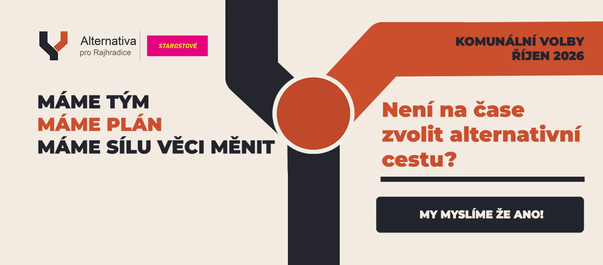
Zadání
Nové uskupení jde do komunálních voleb v Rajhradicích v říjnu 2026, ve spolupráci se Starostovými. Nemělo nic — ani značku, ani vizuální styl, ani hotové šablony. Kampaň přitom běží skoro rok a materiály se vyrábějí průběžně: příspěvek na sociální sítě, video ze setkání, titulek s aktuální lokalitou.
Z toho vyplynulo zadání, které bylo z poloviny grafické a z poloviny provozní. Značka musela být jednoduchá natolik, aby fungovala v profilovce i na banneru, a systém kolem ní musel jít obsluhovat jedním člověkem bez toho, aby se každý nový titulek kreslil od nuly.
Značka
Celá identita stojí na jednom obrazu — rozcestí. Značka je vidlice cesty ve tvaru Y: tmavá větev je ta obvyklá, cihlová ta alternativní. Jeden tvar, který doslova říká název, a přitom zůstává tak jednoduchý, že se čte i ve velikosti favikony.
Motiv se pak nese vším ostatním: silnice v bannerech, kruhový objezd jako křižovatka rozhodnutí, přerušovaná čára na vozovce jako rytmus celé kampaně.
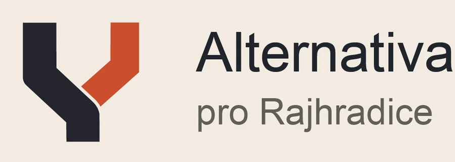
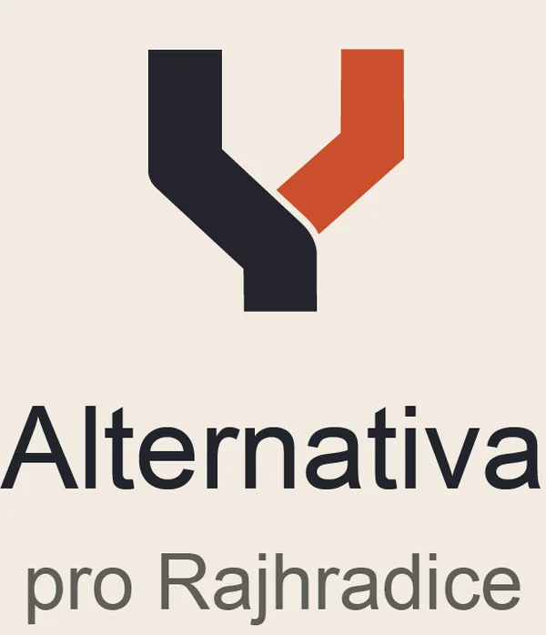
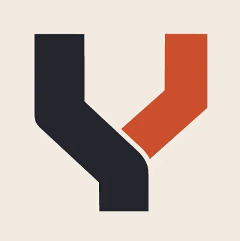
Uskupení kandiduje ve spolupráci se Starostovými, takže identita potřebovala i společný lockup. Purpurová je barva partnera — v systému má vyhrazené jediné místo, právě tenhle štítek, aby nezačala konkurovat cihlové.
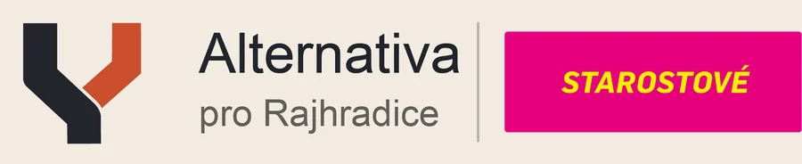
Barvy
Krémová místo bílé a tmavě šedá místo černé — kampaňová grafika je ze tří čtvrtin plocha a čistě bílý podklad na displeji řeže do očí. Cihlová je jediný akcent a nese vždycky to podstatné: odbočku, číslo, výzvu.
Značka v pohybu
Animovaná verze piktogramu na začátek videí a jako profilovka tam, kde to jde. Nejdřív se nakreslí tmavá cesta, pak z ní v ohybu vyroste cihlová odbočka. Je to celý příběh značky ve dvou vteřinách a bez jediného slova.
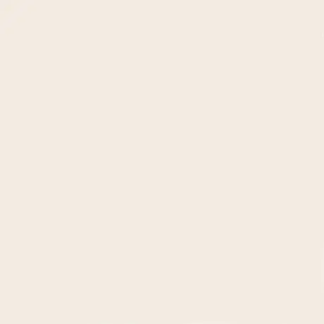
Animovaný piktogram, 2,5 s ve smyčceVykresluje se po snímcích do PNG a exportuje do animovaného WebP i do sekvence s alfou pro střih. Díky tomu jde stejná animace použít v příspěvku i položit přes video, aniž by kolem ní byl bílý rámeček.
Kampaňové vizuály
První příspěvek nemá říct nic než datum a tón. Silnice vede ke kruhu, který je zároveň tečka na konci věty i „tady to začíná".
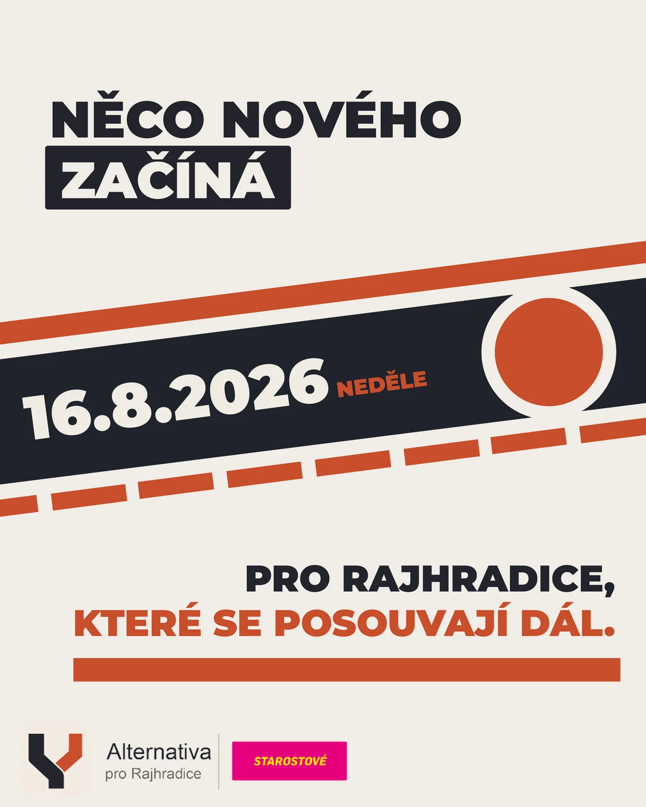
Ohlašovací příspěvekBanner na YouTube je nejzrádnější formát, jaký v kampani je: nahrává se v 2560 × 1440, ale na televizi, na počítači a na telefonu se z něj ukáže pokaždé jiný výřez. Kompozice je proto stavěná od nejmenšího bezpečného pole ven — logo a heslo se vejdou i do mobilního výřezu, silnice a plochy vyplňují zbytek.
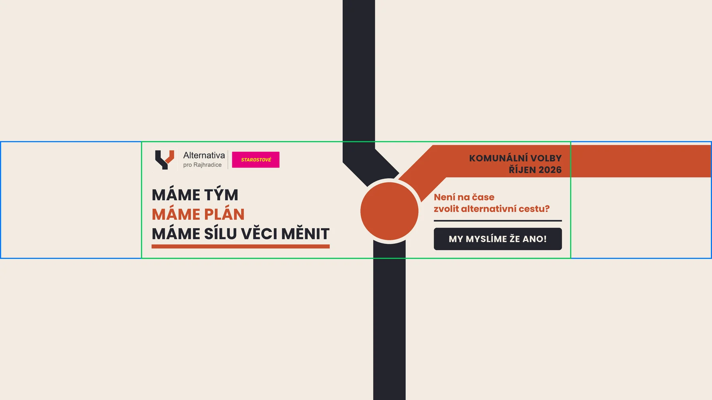
Zeleně mobilní výřez, modře tabletovýVolební leták
Leták A5 do každé schránky v obci před volbami 9.–10. října 2026. Přední strana patří lidem: tři krátké sliby, kandidát na starostu na cihlové ploše a pod ním celá patnáctičlenná kandidátka, každý s číslem a podzimní fotkou ze stejného focení. Zadní strana je program — patnáct bodů rozdělených do tří sloupců pod stejné tři sliby jako vpředu, takže leták se čte jako jeden argument z obou stran.
Patička je na obou stranách tmavá jako silnice ve značce a nese všechno, co vede dál: web, QR kód s piktogramem uprostřed, e-mail, telefon a sociální sítě.
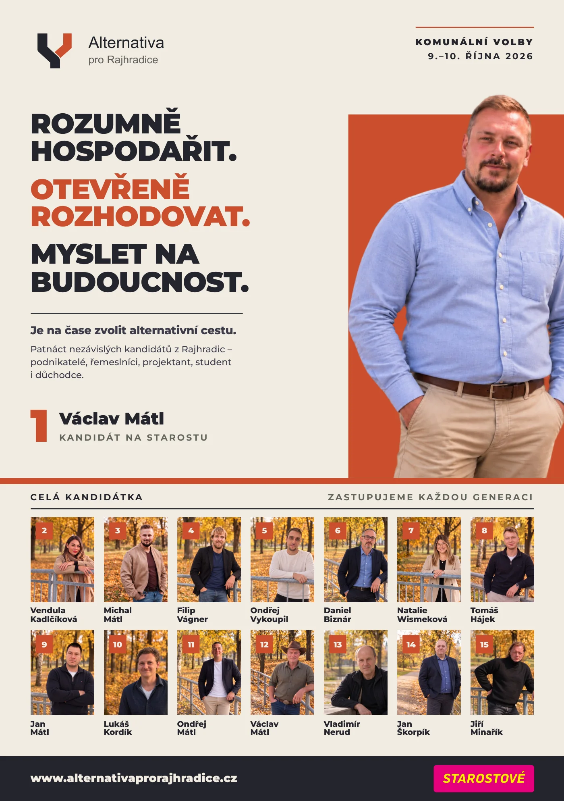
Přední strana — lidé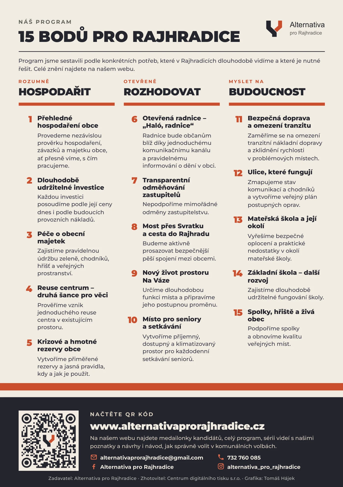
Zadní strana — programWeb
Všechno, na co leták a příspěvky odkazují, je na webu: medailonky kandidátů, celé znění programu, série videí a návod, jak volit v komunálních volbách. Stojí na stejné krémové, tmavé a cihlové jako zbytek kampaně.
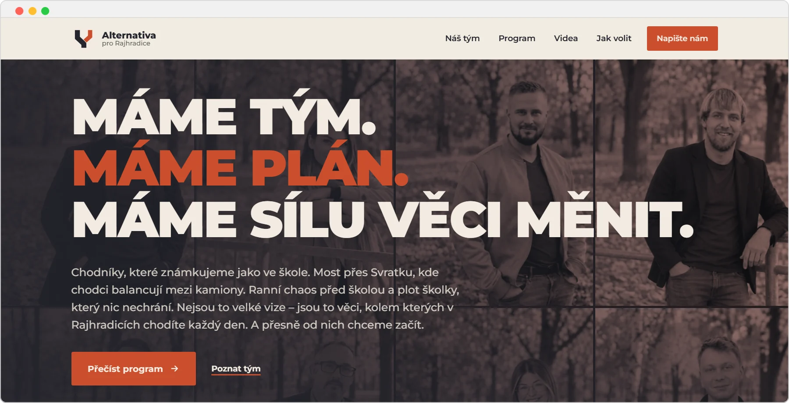
Úvod — heslo kampaně přes fotky kandidátů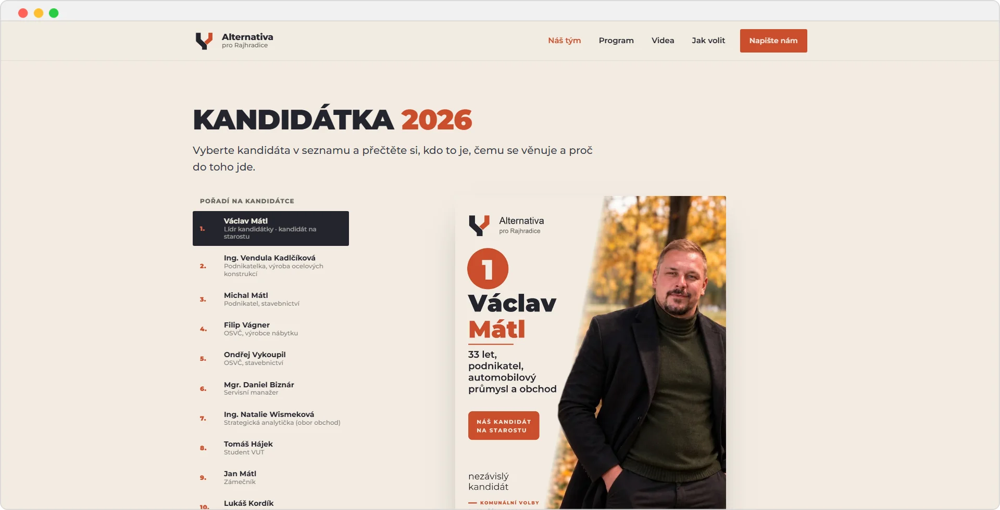
Kandidátka — seznam a medailonky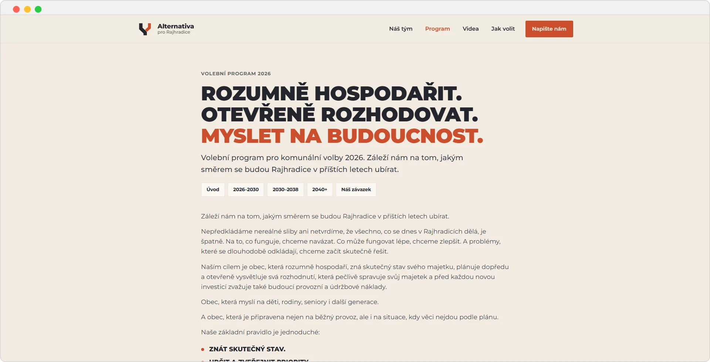
Program — celé znění podle období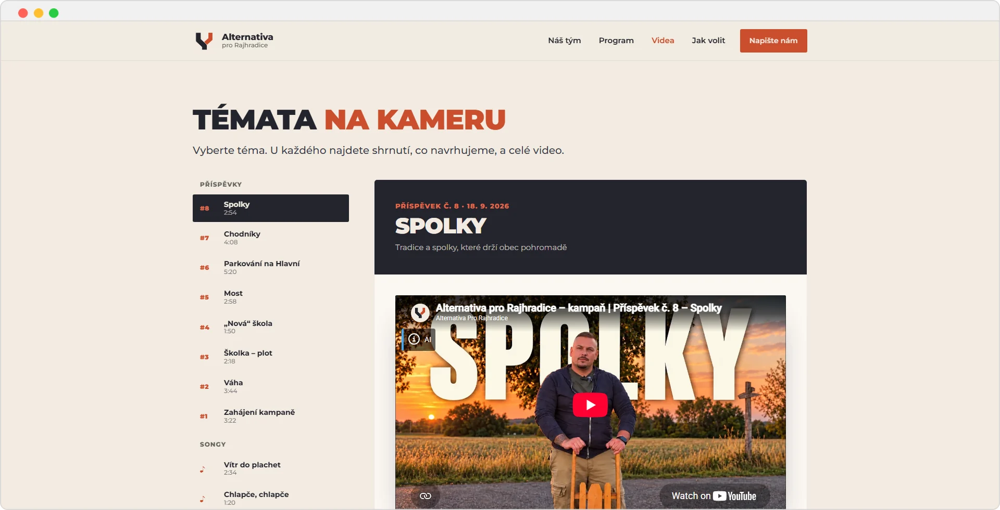
Videa — témata kampaně na kameru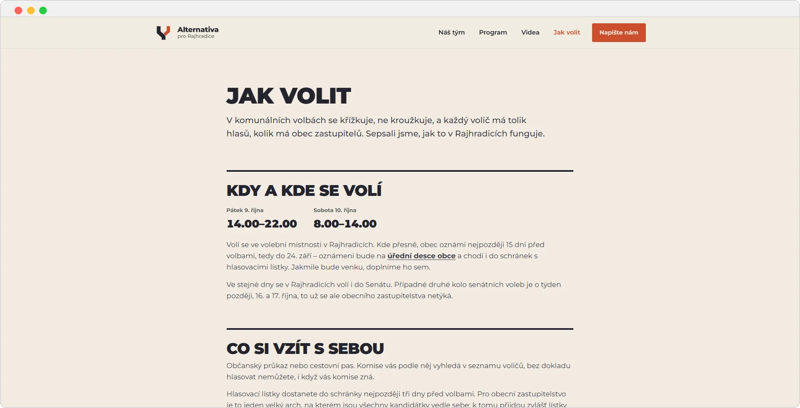
Jak volit — návod ke komunálním volbám